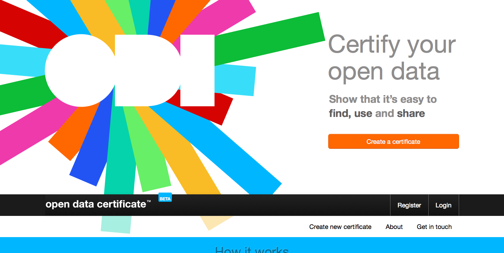

Open Data &
Web Observatories
Dr Tom Heath · Head of Research · Open Data Institute
@tommyhYou can access the slides at http://theodi.github.io/presentations/.
Use arrows to navigate. Press 'f' for fullscreen. Press the Escape key to see all slides.
Open Data Definitions
A piece of data or content is open if anyone is free to use, reuse, and redistribute it — subject only, at most, to the requirement to attribute and/or share-alike.
Open Data Definitions
Open data is information that is available for anyone to use,
for any purpose,
at no cost
Open Data
must be explicitly licensed
the license may impose additional conditions
e.g. attribution, share-alike
!= all the data on the Web
Why does Open Data matter to
Web Observatories?
open data is increasingly widespread
a proving ground for WO tools and techniques
worth studying in its own right
How do Licensing Choices affect
the Data Ecosystem?
The Data Ecosystem
simulation — what are the real numbers?

Open Data Certificates: an Analytical
Framework for
Web Data
Open Data Certificates
set standard for open data publishing
emphasise (re)user needs
help publishers get better


Multiple Levels
| Raw | Pilot | Standard | Exemplar |
|---|---|---|---|
| minimum government standard | core reference data |
A Holistic View
of Published Data
technical
legal
practical
social
what else?
Data Discovery
appropriate granularity?
meaningful definitions of collections?
(theoretical and practical)
prioritising discovery?
Data Comprehension
profiling
summarisation
indexing
cognitive architecture?
Questions?
Tom Heath · Head of Research · Open Data Institute
@tommyh · tom.heath@theodi.org